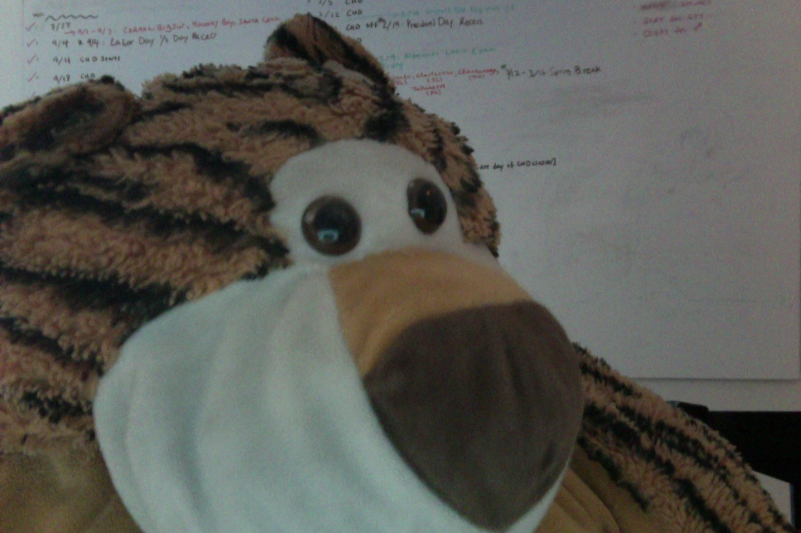

I have a stuffed animal tiger named Tigey.
Check out his photo:

Photo by Andrew
1st Update-12/9/2017Hi! Welcome back to my blog. If you want to learn more about me, then click above^
Third Update-DEC/13/2017
Hello, Yesterday, I cooked/baked Peruvian food with my family. If you want to see my recipes, then click above^
Third Update-DEC/13/2017
I got three teeth pulled out today. I was kind of scared at first, but then I was not. Have you pulled out some teeth? Were you scared?
Fourth Upcate-DEC/15/2017
Hi, welcome back. If you want more interviews, then click above^
Fifth Update-DEC/21/2017
A few weeks ago, I got a stuffed animal bear named White E. B. , after the famous E.B. White. He Says I'm WHITE(even Though he's Brown as in the color) wich confuses EVERYBODY!!! If you want to learn more about White then click above^